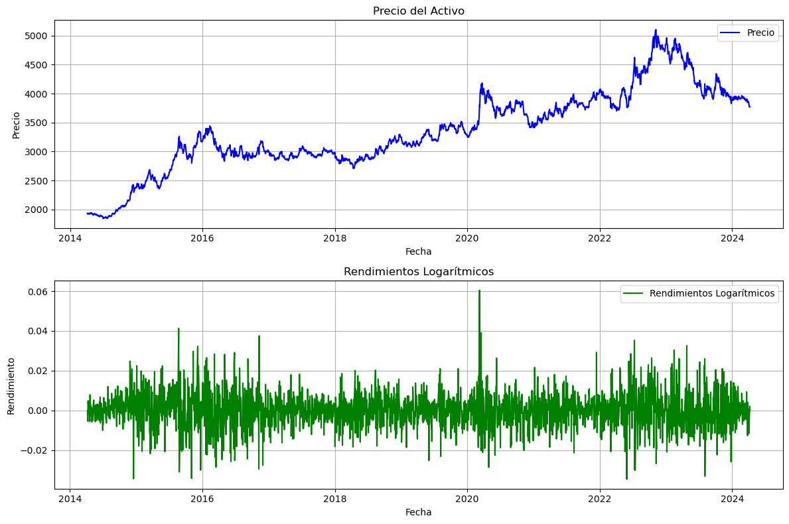
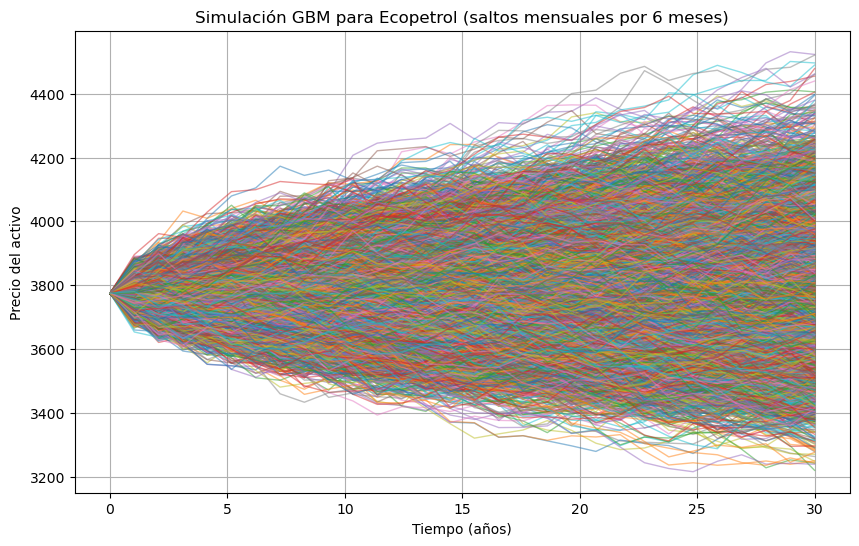
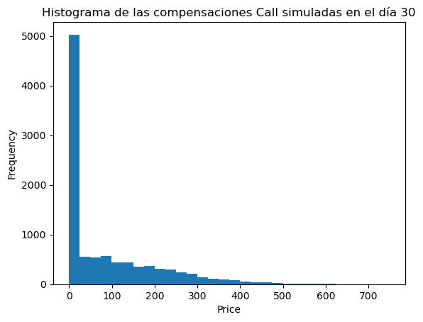

Simulación estrategia de cobertura¶
import numpy as np
import pandas as pd
import matplotlib.pyplot as plt
# Leer el archivo CSV, ajustando el formato de los números
df = pd.read_csv("TRM.csv", delimiter=";")
df["Fecha"] = pd.to_datetime(df["Fecha"], format="%d/%m/%Y")
df["Precio"] = (
df["Precio"]
.str.replace(".", "", regex=False)
.str.replace(",", ".", regex=False)
.astype(float)
)
# Calcular los rendimientos logarítmicos para el gráfico
rendimientos_log = np.log(df["Precio"] / df["Precio"].shift(1))
# Crear figuras para los gráficos
fig, ax = plt.subplots(2, 1, figsize=(12, 8))
# Gráfico de los precios
ax[0].plot(df["Fecha"], df["Precio"], label="Precio", color="blue")
ax[0].set_title("Precio del Activo")
ax[0].set_xlabel("Fecha")
ax[0].set_ylabel("Precio")
ax[0].legend()
ax[0].grid(True)
# Gráfico de los rendimientos logarítmicos
ax[1].plot(
df["Fecha"], rendimientos_log, label="Rendimientos Logarítmicos", color="green"
)
ax[1].set_title("Rendimientos Logarítmicos")
ax[1].set_xlabel("Fecha")
ax[1].set_ylabel("Rendimiento")
ax[1].legend()
ax[1].grid(True)
plt.tight_layout()
plt.show()

# Calcular las tasas de retorno logarítmicas y sus parámetros
precios = df["Precio"].values
tasas_retorno_log = np.log(precios[1:] / precios[:-1])
mu = tasas_retorno_log.mean() # Promedio de la tasa de retorno logarítmica
sigma = tasas_retorno_log.std() # Volatilidad
print("Rentabilidad esperada diaria:", mu)
print("Volatilidad diaria:", sigma)
print("Precio más reciente:", precios[-1])
print("Fecha más reciente:", df["Fecha"].iloc[-1])
Rentabilidad esperada diaria: 0.0002562277963223317
Volatilidad diaria: 0.008762064060163022
Precio más reciente: 3774.86
Fecha más reciente: 2024-04-08 00:00:00
Simulación diaria hasta un mes:¶
# Función para simular múltiples trayectorias usando el modelo GBM
def simular_gbm(S0, mu, sigma, T, dt, num_trayectorias, seed=None):
"""
Simula múltiples trayectorias de un Movimiento Browniano Geométrico.
Parámetros:
- S0: Precio inicial del activo.
- mu: Tasa de retorno logarítmica media.
- sigma: Volatilidad del activo.
- T: Tiempo total de simulación.
- dt: Paso de tiempo de la simulación.
- num_trayectorias: Número de trayectorias a simular.
- seed: Semilla para el generador de números aleatorios (opcional).
Retorna:
- t: Vector de tiempos de simulación.
- S: Array con las trayectorias simuladas del precio del activo.
"""
if seed is not None:
np.random.seed(seed) # Establecer la semilla para reproducibilidad
n = int(T / dt) # Número de pasos en el tiempo
t = np.linspace(0, T, n)
S = np.zeros((n, num_trayectorias))
S[0] = S0
for i in range(1, n):
Z = np.random.standard_normal(num_trayectorias) # Genera variaciones aleatorias
S[i] = S[i - 1] * np.exp((mu - 0.5 * sigma**2) * dt + sigma * np.sqrt(dt) * Z)
return t, S
# Parámetros de la simulación
S0 = df["Precio"].iloc[-1] # Precio inicial: último precio conocido
T = 30 # Tiempo total de simulación (30 días para llegar al mes)
dt = 1 # Paso de tiempo (saltos diarios)
num_trayectorias = 10000 # Número de trayectorias a simular
seed = 52 # Semilla para la reproducibilidad
# Simular las trayectorias y visualizar
t, trayectorias_simuladas = simular_gbm(S0, mu, sigma, T, dt, num_trayectorias, seed)
plt.figure(figsize=(10, 6))
for i in range(num_trayectorias):
plt.plot(t, trayectorias_simuladas[:, i], linewidth=1, alpha=0.5)
plt.xlabel("Tiempo (años)")
plt.ylabel("Precio del activo")
plt.title("Simulación GBM para Ecopetrol (saltos mensuales por 6 meses)")
plt.grid(True)
plt.show()

# Get the last column of the array
last_time_prices = trayectorias_simuladas[-1, :]
# Create a histogram
plt.hist(last_time_prices, bins=30)
plt.xlabel('Price')
plt.ylabel('Frequency')
plt.title('Histograma de los precios simulados en el día 30')
plt.show()

Valoración de Opción Financiera de compra:¶
La serie de tiempo tiene frecuencia diaria, así que las tasas del mercado se convertirán a diarias.
# Datos de las tasas libres de riesgo:
rd = 0.12121 # E.A. (IBR para 1 mes)
rf = 0.0532999 # Nominal Anual (SOFR para 1 mes)
# Conversión de tasas diarias.
rd = np.log(1 + rd)/365 # C.C.D.
rf = np.log(1 + rf / 12) /365 # C.C.D.
def valorar_opcion_divisa_call(S0, K, T, rd, rf, sigma, num_simulaciones):
if seed is not None:
np.random.seed(seed) # Establecer la semilla
dt = T # Asumimos un paso de tiempo hasta el vencimiento
Z = np.random.standard_normal(num_simulaciones)
ST = S0 * np.exp((rd - rf - 0.5 * sigma**2) * dt + sigma * np.sqrt(dt) * Z)
payoff_call = np.maximum(ST - K, 0) # Para Put sería np.maximum(K - ST , 0)
V0 = np.exp(-rd * T) * np.mean(payoff_call)
return V0
Opción de compra europea con vencimiento en un mes. Opción ATM.
# Parámetros de la opción sobre divisas
S0 = df["Precio"].iloc[-1] # Precio inicial: último precio conocido
K = S0 # Precio de ejercicio (Opción ATM)
T = 30 # 1 mes
num_simulaciones = 10000 # Número de simulaciones
seed = 52
precio_opcion_call = valorar_opcion_divisa_call(S0, K, T, rd, rf, sigma, num_simulaciones)
print("El precio de la opción de compra sobre divisas es:", precio_opcion_call)
El precio de la opción de compra sobre divisas es: 89.36789738483625
Simulación estrategia de cobertura con Opción Call:¶
Compensaciones en el último período simulado.
payoff_call_T = np.maximum(last_time_prices - K, 0)
# Create a histogram
plt.hist(payoff_call_T, bins=30)
plt.xlabel('Price')
plt.ylabel('Frequency')
plt.title('Histograma de las compensaciones Call simuladas en el día 30')
plt.show()

Cantidad de escenarios donde se ejerce la opción:
ejercer = np.sum(last_time_prices > K)
print("Cantidad de escenarios donde se ejerce:", ejercer)
print("Probabilidad de ejercer la Call:", ejercer/num_trayectorias)
Cantidad de escenarios donde se ejerce: 5519
Probabilidad de ejercer la Call: 0.5519
Precios con cobertura:¶
hedge_price = np.abs(-last_time_prices+payoff_call_T-precio_opcion_call)
# Create a histogram
plt.hist(hedge_price, bins=30)
plt.xlabel('Price')
plt.ylabel('Frequency')
plt.title('Histograma de los precios con cobertura en el día 30')
plt.show()

Resultados de la simulación de la cobertura:¶
from scipy import stats
import numpy as np
# Calculate the most frequently occurring price
mode_hedge_price = stats.mode(hedge_price)[0]
# Calculate the volatility
vol_hedge_price = np.std(hedge_price)
vol_price = np.std(last_time_prices)
print("Precio promedio sin cobertura:", np.mean(last_time_prices))
print("Volatilidad escenario sin cobertura:", vol_price)
print("Precio más probable con cobertura:", mode_hedge_price)
print("Volatilidad escenario con cobertura:", vol_hedge_price)
Precio promedio sin cobertura: 3801.4537062078894
Volatilidad escenario sin cobertura: 180.18770007458394
Precio más probable con cobertura: [3864.22789738]
Volatilidad escenario con cobertura: 93.29368332042841